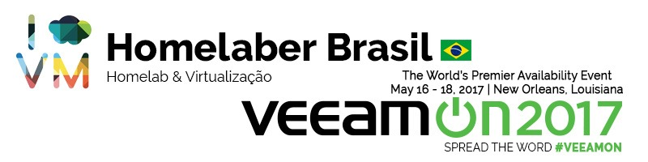
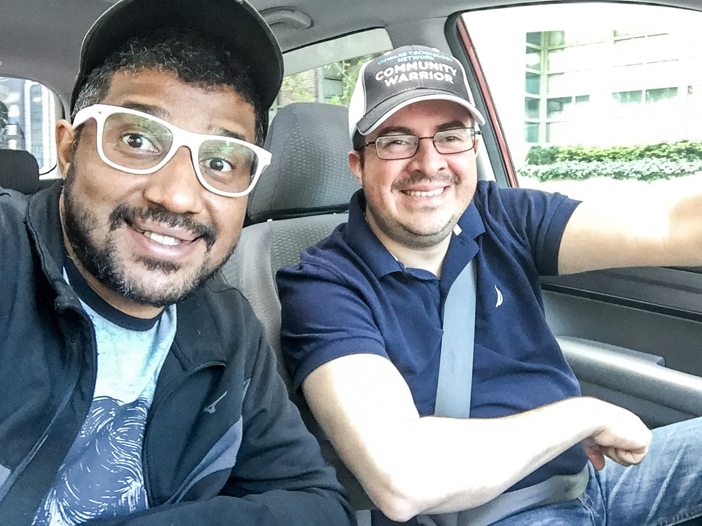
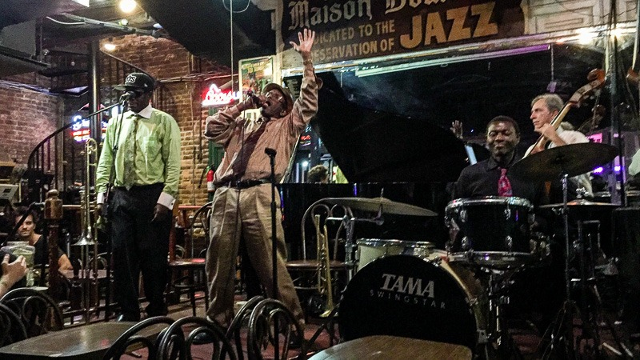
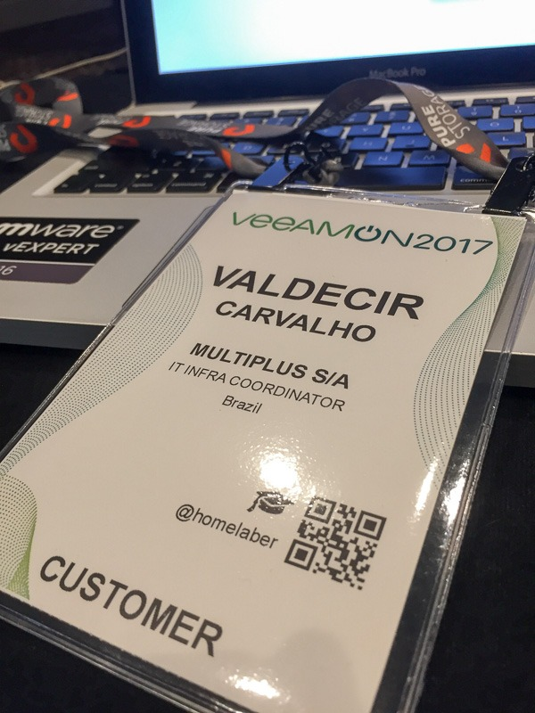
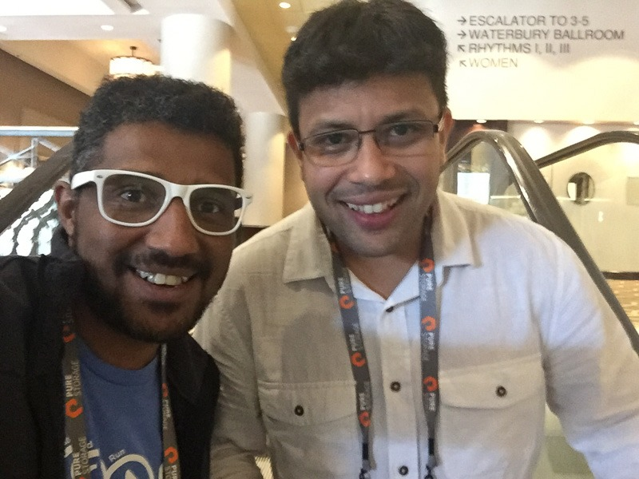
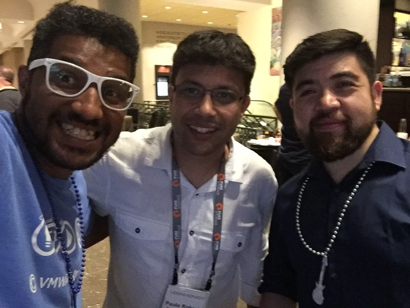
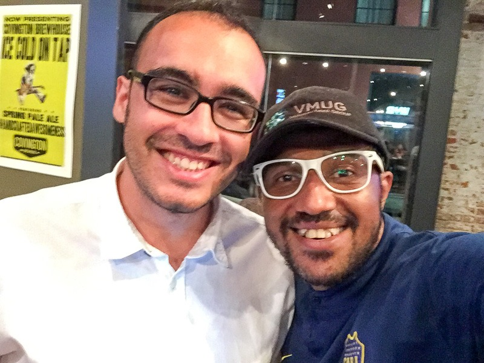
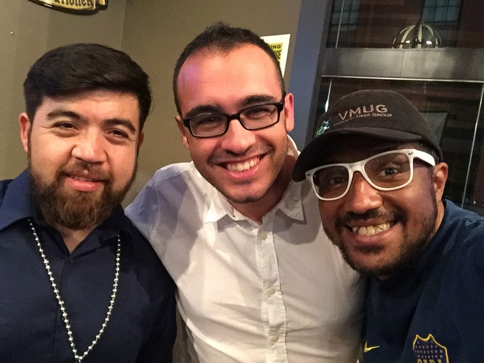
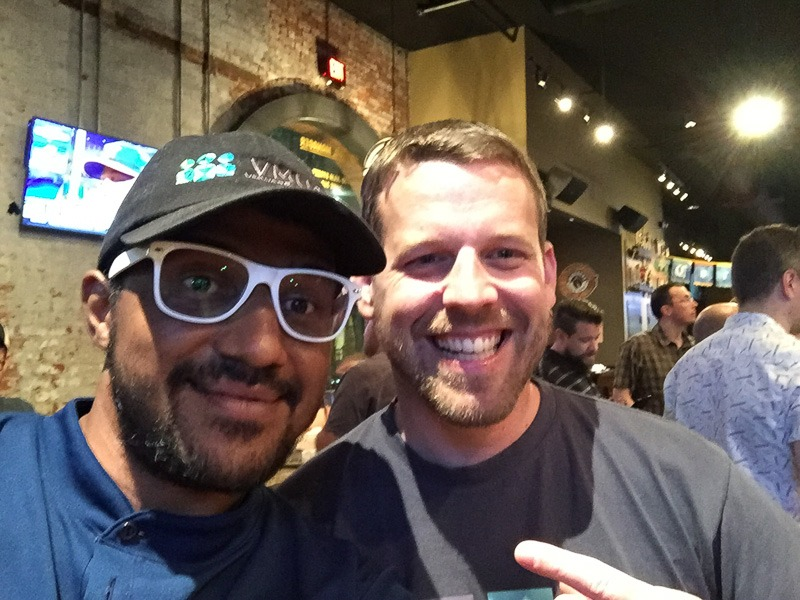

Diário #VeeamOn - Treinamento VMCE - Dia 1
VeeamON 17Compartilhe esse post nas redes sociais...

Olá Homelabers!
Post direto de New Orleans! Até comecei a escrever esse post lá, mas não consegui finalizá-lô. Durante essa semana, vou fazer uma série de posts para contar a você como foi o #VeeamON 2017 sobre o meu ponto de vista. Esperem muitas fotos, textos um pouco longos e links :)
14 e 15 de Maio de 2017
A Viagem
https://twitter.com/homelaber/status/863499838658314240
Cheguei em NOLA no domingo a noite (14/05), após um longo vôo e uma conexão de 12 horas (!!!) em NYC. A boa é que pude me encontrar com meu amigo Ariel Sanchez Mora (@arielsanchezmor) e colocar o papo em dia e ainda dar algumas voltas por NYC - até aluguei uma bicicleta e finalmente consegui subir no One World Trade Center (One World Observatory) - recomendo o passeio! #Dica: Compre o ingresso on-line. Assim, você evita a fila enorme para comprar o ingresso e já vai direto para os elevadores.
[caption id=“attachment_2944” align=“aligncenter” width=“800”] Com o “famoso” Ariel Sanchez Mora em NYC[/caption]
New Orleans
Ainda consegui forças para tomar uma merecida cerveja na Bourbon Street e assistir 15 minutinhos de um show de Jazz ao vivo.

Treinamento VMCE (Veeam Certified Engineer)
 Na segunda e na terça, participei do treinamento de VMCE (Veeam Certified Engineer). O treinamento foi bem puxado, mas valeu a pena. Mesmo tendo a opção de fazer a prova aqui, achei melhor marcar para fazer no Brasil. De todas as pessoas com quem conversei sobre a prova, 100% disseram que a prova é difícil e bem “By The Book”, ou seja, precisa saber tudo o que está no material de treinamento, então… melhor estudar um pouco antes de fazer a prova :).
Minha experiência com os produtos da Veeam era quase ZERO. O treinamento é bastante detalhado e os instrutores deram várias dicas sobre a prova.
Normalmente, esse treinamento é feito em 3 dias, mas eles conseguiram condensar em 2 dias para o evento, pois os laboratórios eram simulados, o que por um lado acelerava bastante e facilitava a sua compreensão, mas por outro lado, faltou aquele gostinho de realmente colocar a mão na massa.
O primeiro dia foi uma passada geral nos produtos da Veeam e a “instalação e configuração” da suite do Veeam Availability Suite (Backup e Replication + Veeam ONE).
https://twitter.com/ErwannSimon/status/864172991030153216
Ao final do primeiro dia do treinamento, a Veeam promoveu um coquetel para aos participantes. Foi a primeira de muitas interações sociais com o pessoal, se é que vocês me entendem. Finalmente conheci o Paulo Sant’Anna (@paulo_santanna) do blog paulosantanna.com, o** único Veeam Vanguard do Brasil** (eu chego lá!)
Conheci também o Patrício Cerda (@patote83) do blog patriciocerda.com que é vExpert, Veeam Vanguard e faz parte da Máfia LATAM.
Logo depois, fomos encontrar com um outro pessoal no World of Beer e tive a chance de conhecer e reencontrar vários outros Twitters com quem me relaciono e sempre comendo aqui no blog: Jorge de la Cruz (@jorgedlcruz) do blog jorgedelacruz.es, Tim Smith (@tsmith_co) do blog tsmith.co, Matt Crape (@MattThatITGuy) do blog 42u.ca e muitos outros.
[caption id=“attachment_2937” align=“aligncenter” width=“800”] Paulo Sant’Anna[/caption]
[caption id=“attachment_2936” align=“aligncenter” width=“800”] Valdecir, Paulo e Patrício[/caption]
[caption id=“attachment_2935” align=“aligncenter” width=“800”] Jorge de la Cruz. The blogger Machine[/caption]
[caption id=“attachment_2939” align=“aligncenter” width=“800”] Os Latinos: Patrício, Jorge e Valdecir[/caption]
[caption id=“attachment_2940” align=“aligncenter” width=“800”] Valdecir e Tim Smith[/caption]
Bom pessoal, vou ficando por aqui! Esse foi o primeiro post da série do #VeeamON17. Espero que tenham gostado e aguardem mais por ai. O próximo post será sobre o Bloggers Meeting que aconteceu no dia 16/05.
Compartilhe esse post nas redes sociais...Valdecir Carvalho
Nerd e pai orgulhoso da Mariana e João. Profissional Sênior de TI com foco em arquitetura de infraestrutura e cloud computing. Blogueiro, podcaster, palestrante, amante de comunidades técnicas, fotógrafo aposentado e adora jogos antigos.
#vExpert · #VMUGLeader · #VUGBrasil · #vBronwBagBrasil · #VeeamVanguard